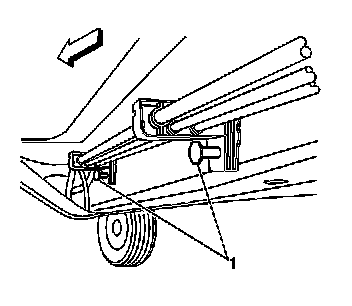
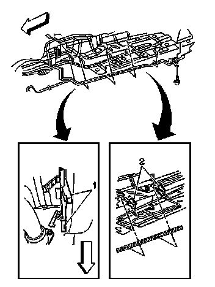
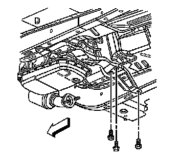
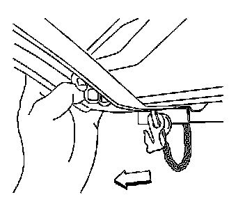

Fuel Return Line: Service and Repair
Fuel Hose/Pipes Replacement - Chassis
Removal Procedure
The fuel system hose/pipes are serviceable individually or as a complete fuel/brake bundle assembly, the following procedure is servicing the fuel hose/pipes individually.
Caution: Refer to Gasoline/Gasoline Vapors Caution (Service Precautions) .
1. Relieve the fuel system pressure. Refer to Fuel Pressure Relief (With CH 48027) (Fuel Pressure Relief (With CH 48027))Fuel Pressure Relief (Without CH 48027) (Fuel Pressure Relief (Without CH 48027)) .

2. Disconnect the feed hose/pipe (1) from the fuel rail. Refer to Metal Collar Quick Connect Fitting Service (Metal Collar Quick Connect Fitting Service) .
3. Plug the open ports to prevent fuel loss and contamination.

4. Disconnect the evaporative emission (EVAP) quick connect fitting (2). Refer to Plastic Collar Quick Connect Fitting Service (Plastic Collar Quick Connect Fitting Service) .

5. Open the retainers (1 and 2) located at the rear of the engine and on the front of dash.
6. Raise and support the vehicle. Refer to Lifting and Jacking the Vehicle (Service and Repair) .

7. Refer to Plastic Collar Quick Connect Fitting Service (Plastic Collar Quick Connect Fitting Service) and Metal Collar Quick Connect Fitting Service (Metal Collar Quick Connect Fitting Service) in order to disconnect the following quick connect fittings from the chassis bundle:
* The fuel filter (2)
* The fuel hose
* The fuel EVAP hose
Plug the open outlet ports to prevent fuel loss and contamination.

8. Pull the locking mechanism (1) outward in order to disengage the fuel/brake bundle chassis pipe retainers from the rail.

9. Open the retainers (1) located at the forward portion of the rail in order to remove the chassis hose/pipes.
10. Complete the following in order to remove the chassis hose/pipes from the retainers (2) located at the rearward portion of the rail:
1. Pull the retainers (2) free from the rail.
2. Open the retainers (2) at the top.
3. Remove the chassis hose/pipes from the retainers (2).
11. Pull downward in order to disconnect the fuel/brake bundle chassis pipe retainer from the underbody.
12. Remove the bolt securing the fuel filter bracket to the body.

13. Remove the bolts securing the transmission support to the underbody, from the right side only.

14. Pull the right side transmission support down only enough to allow removal of the chassis fuel hose/pipes.
15. Partially lower the hoist only enough to simultaneously gain access to both the front and rear portions of the chassis fuel hose/pipes.
16. With the aid of an assistant, carefully guide the chassis fuel hose/pipes down through the engine compartment, removing from the bottom.
Installation Procedure
1. Clean any of the contamination from the male line ends and apply a few drops of clean engine oil.
2. With the aid of an assistant, carefully guide the chassis fuel hose/pipes up through the engine compartment into position.
3. Raise and support the vehicle. Refer to Lifting and Jacking the Vehicle (Service and Repair) .
4. Pull the right side transmission support down only enough to allow installation of the chassis fuel hose/pipes.
Notice: Refer to Fastener Notice (Fastener Notice) .
5. Install the bolts securing the transmission support to the underbody.
Tighten the transmission support bolts to 60 N.m (44 lb ft).
6. Install the bolt securing the fuel filter bracket to the body.
Tighten the fuel filter bracket bolt to 9 N.m (80 lb in).
7. Push upward in order to connect the fuel/brake bundle chassis pipe retainer to the underbody.
8. Complete the following in order to install the chassis hose/pipes to the retainers (2) located at the rearward portion of the rail:
1. Install the chassis hose/pipes into the retainers (2).
2. Close the retainers (2) at the top.
3. Insert the retainers (2) into the rail.
9. Install the chassis hose/pipes into the retainers (1) located at the forward portion of the rail.
10. Close the retainers.
11. Push the locking mechanism (1) inward in order to engage the fuel/brake bundle chassis pipe retainers to the rail.
12. Refer to Plastic Collar Quick Connect Fitting Service (Plastic Collar Quick Connect Fitting Service) and Metal Collar Quick Connect Fitting Service (Metal Collar Quick Connect Fitting Service) in order to connect the following quick connect fittings to the chassis bundle:
* The fuel filter (2)
* The fuel hose
* The fuel EVAP hose
13. Lower the vehicle.
14. Insert the chassis hose/pipes into the retainers (1 and 2) located at the rear of the engine and the front of dash.
15. Close the retainers.
16. Connect the EVAP quick connect fitting (2). Refer to Plastic Collar Quick Connect Fitting Service (Plastic Collar Quick Connect Fitting Service) .
17. Connect the fuel feed pipe (1) to the fuel rail. Refer to Metal Collar Quick Connect Fitting Service (Metal Collar Quick Connect Fitting Service) .
18. Check the fuel system for leaks.
19. Install the fuel injector sight shield. Refer to Fuel Injector Sight Shield Replacement (Service and Repair) .